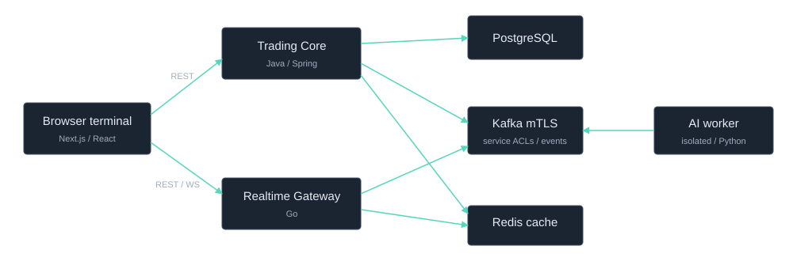

Trading Core Java / Spring
Order validation and lifecycle, execution accounting, exact decimal P&L, persistence, reconciliation and transactional inbox/outbox delivery.
JAVA / GO / TYPESCRIPT / PYTHON
Realtime quotes, authoritative order activity, exact financial calculations and asynchronous news insights in one compact workspace.
Full stack running locally in simulated/MOCK mode.
A fresh simulated session: quotes and chart history, a buy/sell round trip, Core-calculated Day P&L, execution notifications and synthetic news insights. No live-money orders or live model calls.

Order validation and lifecycle, execution accounting, exact decimal P&L, persistence, reconciliation and transactional inbox/outbox delivery.
Market-data normalization, authoritative bars, bounded quote fanout and order-update hints that trigger Core refetches.
Per-symbol quote subscriptions, one imperative chart, explicit uncertainty and notifications grounded in Core state.
Validated asynchronous enrichment with durable worker state, bounded resources and deterministic public fixtures. No trading capability.

Actual simulated application capture. The hosted page is a static showcase, not an interactive trading service.